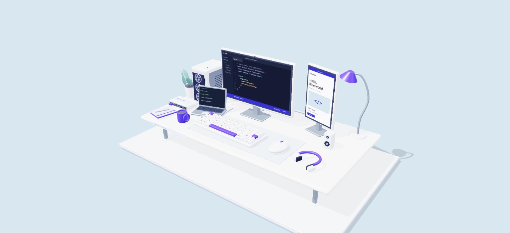
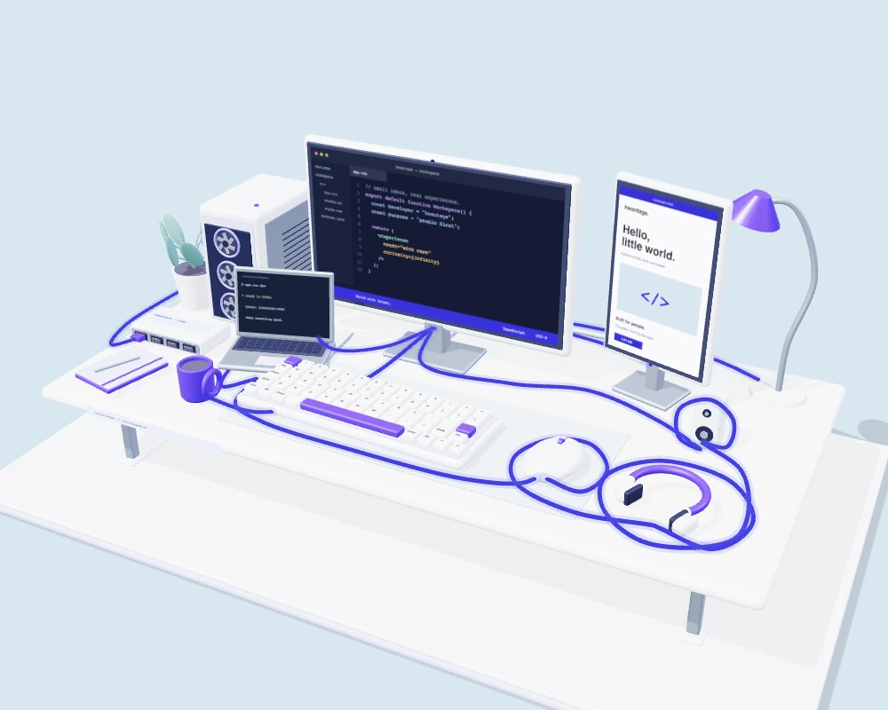

Web & interface
빠르고 명료한 인터페이스를 설계하고 구현합니다.
안녕하세요, 프론트엔드 개발자 김정환입니다.
작은 아이디어를,
사람에게 닿는 경험으로 만듭니다.

작업실을 열고 있습니다...
The way I work
좋은 화면은 예쁘게 끝나지 않습니다.
복잡한 것을 정리하고, 다음
행동을 선명하게 하고,
함께 일하는 사람의 시간을 돌려줍니다.
먼저 질문하고, 충분히 이해합니다. 사용자의 실제 흐름과 팀의 맥락을 살피며 무엇을 만들고 무엇을 덜어낼지 결정합니다.
Context before code작은 컴포넌트부터 하나의 시스템으로 확장합니다. 빠르게 만들되, 다음 사람이 자연스럽게 이어갈 수 있는 구조를 남깁니다.
Craft in every detail배포 이후의 반응도 제품의 일부입니다. 기록하고 측정하며, 더 나은 다음 버전으로 연결합니다.
Ship, learn, repeatTools for the job
기술은 목적을 위한 도구입니다.
상황에 맞게 고르고, 하나의
경험으로 연결합니다.
빠르고 명료한 인터페이스를 설계하고 구현합니다.
화면 뒤의 데이터와 서비스가 안정적으로 이어지게 합니다.
만든 것이 계속 살아 있도록 배포와 운영을 챙깁니다.

A place to think. A place to build.A little more
복잡한 정보나 기능을 사용자가 이해할 수 있는 화면으로 정리하는 일입니다. 디자인과 개발 사이에서 맥락을 잃지 않는 것을 중요하게 생각합니다.
사용자, 비즈니스 목표, 현재 팀의 제약을 함께 봅니다. 그 세 가지가 만나는 지점에서 작고 검증 가능한 첫 결과를 정합니다.
Next, something good.
새로운 제품, 팀의 다음 단계,
혹은 그냥 웹에 대한 이야기. 편하게
들려주세요.